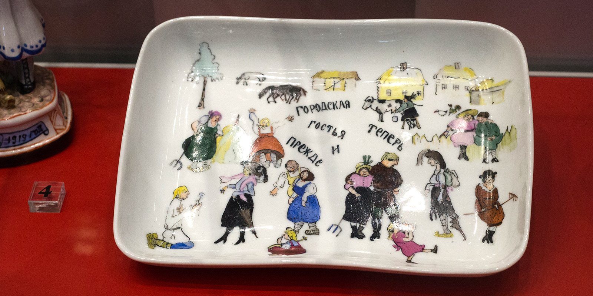
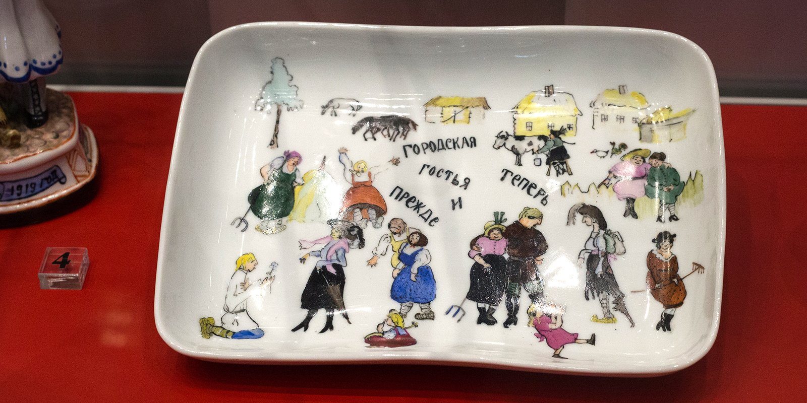

Soviet propaganda comes to life through crockery at Kuskovo Ceramics Museum
In 1918, Russia started producing plain plates and cups without the traditional flowers and gilded lining. Rather than earthenware to please the aesthetically-minded, this new crockery was designed to boost class awareness of the proletariat. The new cups and plates were adorned with the hammer and sickle and could be found in every kitchen. It elevated the art of propaganda to new levels. These place settings were later called a unique episode in the history of this country’s applied-decorative art.
An exhibit called “We will build our own world, a new world…” is running at the Kuskovo Estate’s State Ceramics Museum through 1 October. Mos.ru and the Mosgortur agency have prepared this story on the exhibition.
The creator of Soviet identity
Soviet Russia was not the first to invent propaganda-laden place settings. During the French Revolution of 1789-1794, a factory in Nevers manufactured patriotic faience, including kitchenware with revolutionary symbols on them. In 1918, the Bolsheviks nationalised the former Imperial Porcelain Factory in Petrograd, now St Petersburg, that catered to the Royal Family and which sold none of its items. They launched an ambitious programme to manufacture kitchenware, like the one in revolutionary France. That same year, the company was renamed as the State Porcelain Plant (GFZ). In 1925, it was renamed as the Lomonosov Leningrad Porcelain Plant (LFZ).
In 1918-1923, Sergei Chekhonin, a student of noted Russian artist Ilya Repin, worked at the plant, becoming the undisputed creative leader and the father of propaganda crockery. According to his contemporaries, he began to etch his own Imperial-Soviet Empire style on porcelain. This period in the plant’s history is known as the Chekhonin Era.
A great graphic artist and calligraphy expert, he was well-versed in ornamental and book-miniature techniques. Chekhonin perfected his own style, covering earthenware cups and plates with revolutionary slogans and calls to action, and logos and symbols of the young country. This style eventually inspired many of the earthenware artists that were cooperating with Chekhonin. First he made simple propaganda covered plates, rimmed with slogans, and he soon started developing more complicated themes of Soviet heraldry.
.jpg) 

Chekhonin started working with some fine art painters who had never worked with earthenware before, including Kuzma Petrov-Vodkin, Boris Kustodiyev and Alexander Samokhvalov, who introduced new themes and improved product quality, turning propagandistic earthenware into an art trend.
In 1928, Chekhonin went on a business trip to France and never came back. According to some rumours, he drew a “sinister” portrait of Vladimir Lenin in 1920 and feared that the Soviet secret police would come knocking on his door. But there is no evidence to back these claims.
Biblical concepts serve the revolution
The Bolsheviks exploited the ideas of social justice and created a well-composed and understandable system of Communist propaganda. In the autumn of 1918, an ad hoc commission selected 28 slogans for use in all art types and genres, with Lenin also approving them. Some of them were just revised Bible phrases.
The slogan “There shall be no end to the kingdom of workers and peasants” is consonant with the Bible’s “Of his kingdom there shall be no end” (Luke 1:33). Another slogan reading “Those who are not with us are against us” evokes the Biblical passage, “Whoever is not with me is against me, and whoever does not gather with me scatters” (Matthew 12:30). The most famous Soviet slogan “He who does not work, neither shall he eat” was revised from the Apostle Paul’s Second Epistle to the Thessalonians “For even when we were with you, this we commanded you, that if any will not work, neither shall they eat” (2 Thess. 3:10).
Visual images of religious art were also used. For example, a plate from a series commemorating the notorious 1921 famine in Russia’s Volga region shows the angel of the revolution flying over an industrial city. This is the winged horseman from the Third Internationale who looks like St George. And the central section of artist Zinaida Kobyletskaya’s panel “Road to Socialism” shows the new Tower of Babel being built by proletarians from all countries who have united and who are dreaming of speaking the same language.
Earthenware and state symbols
From 1918, the bottoms of GFZ/LFZ products were stamped with seals featuring the hammer and sickle and a cogwheel. Sometimes they were even more diversified. Step by step, the plant’s craftsmen selected and introduced new visual symbols of Soviet Russia, the land of workers and peasants, including the plough and the harrow, the scythe and the rake, the axe and the ice-cutter, the pincers and the nail puller, the saw and the steel spring. Some purely Masonic combinations, including the compass and the triangle and the globe with a book, were also used.
.jpg)
Prototype versions of Yelena Mukhina’s famous sculpture “Worker and Kolkhoz Woman,” made for the 1937 International Exposition of Art and Technology in Modern Life in Paris, began to appear in the 1920s. For example, the famous 1922 chess set “The Reds and the Whites” by Natalia Danko included figurines of a peasant woman with a sickle and a hammer-wielding worker.
Danko started working for GFZ/LFZ in 1914 and eventually became its chief sculptor. She could easily grasp the gist of historical eras and created new protagonists, including common people, her contemporaries and those involved in revolutionary change. In all, Danko created about 300 models. Apart from propaganda earthenware, she made sculptures for the Moscow Metro’s Ploshchad Sverdlova, now Teatralnaya, station in 1936-1937, where everyone could see them.
From Malevich to modern designs
In the 1920s, GFZ/LFZ started cooperating with Avant-Garde artists, including Kazimir Malevich, Vladimir Tatlin, Nathan Altman and Wassily Kandinsky, who designed new earthenware styles. Kandinsky used several ornaments for painting tea sets that became widely popular, with the People’s Commissariat (Ministry) of Foreign Trade ordering many of these tea sets.
Propaganda earthenware showcased the USSR in bourgeois Europe, with the plant selling over 90 percent of its goods abroad. Figurines of workers and table sets with slogans stole the limelight at many exhibitions and auctions. Newspapers of the period wrote that Soviet earthenware had overshadowed both old Dresden china and the intricate Chinese porcelain.
At first, GFZ/LFZ artists used blank plates, leftovers from the days of the Russian Empire, but they started developing new forms and moulds in the 1920s. The Suprematists also showed what they were worth. Although Malevich was not a member of the plant’s staff, he helped develop new architectonic forms and shapes. In 1923, he conceived a kettle and cups with unique shapes that caused quite a stir among private collectors. Although the Suprematists were quickly dismissed, artist Yelena Danko, Natalia Danko’ sister, said in 1929 that Suprematist kitchenware enjoyed acclaim in the USSR and in the West, that customers order them more than any other design, and that these household items had both utilitarian and aesthetical value.
New LFZ concepts also influenced other Soviet earthenware manufacturers. This trend grew in the mid-1920s after production workers started searching for new functional solutions.
The octagonal Coral table set from the Likino-Dulyovo Porcelain Plant became a classic example of functionalism. In an effort to create simple and long lasting items, its designers foresaw the principles used by contemporary designers. The set featured some well thought out details, such as flush-mounted lids, flat spouts, and few protruding elements to minimize the risk of chipping. Coral table sets were exported to the United States and elsewhere before World War II.
Propaganda earthenware became less popular by the mid-1930s when it turned out that no world revolution was in sight. At that time, a new world war was brewing in Europe, and the designers focused on other themes. Although factories continued to turn out plates with the hammer and sickle for various revolutionary anniversaries, interest in them waned. Today, people collecting and researching Soviet-era propagandistic earthenware are mostly interested in the originals made from 1917 through 1937.